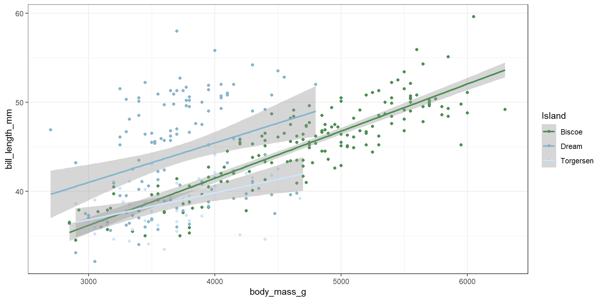
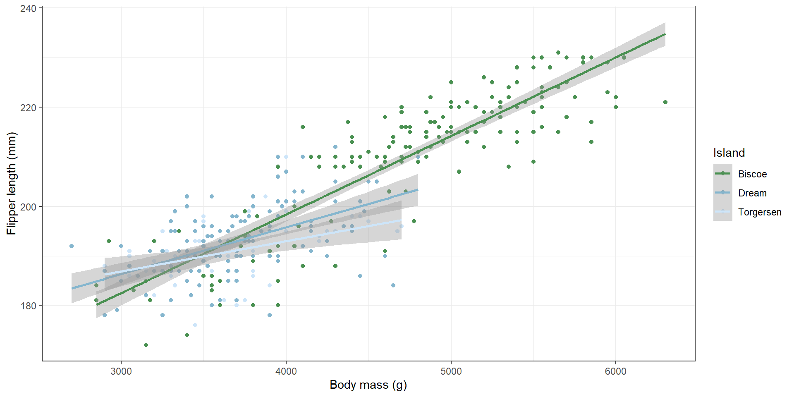
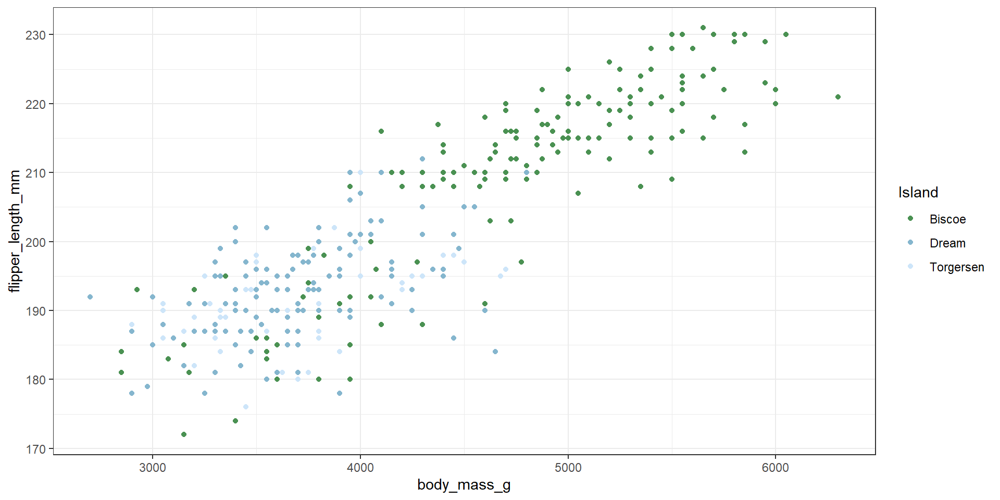

# A tibble: 6 × 4
a b c d
<dbl> <dbl> <dbl> <dbl>
1 1.06 -0.648 -0.463 0.800
2 -0.355 0.813 0.528 0.668
3 0.857 0.682 0.500 -0.988
4 -0.706 -0.00445 -1.89 1.05
5 -0.0677 -0.921 -1.65 1.08
6 0.233 0.407 -1.27 -0.0285Computer Modeling (OCN 682)
Functional Programming
Dr. Nyssa Silbiger
UH Fall 2026
2026-10-13
Outline of class
Functional programming — writing reusable code
- When to write a function
- How to make a custom function
- Making plotting functions
- Control flow with if-else
- Adding flexibility with arguments
- Intro to AI use [Will give this assignment next week]
Homework: Practice writing functions
Review
- What aesthetic is essential to include in geom_polygon() to prevent your map from looking like a tangle of lines?
- What is a bounding box in the context of mapping?
Why Write Functions?
When do you need a function?
Use a function when:
- You have a task you want to use more than once
- You want to keep your script clean and organized
- You want to avoid mistakes with copy and paste
- You minimize places where you need to update your code

Example: Rescaling data
Imagine you want to rescale multiple columns to lie between 0 and 1 using: \(\frac{x - \min(x)}{\max(x) - \min(x)}\)
Set up a dataframe with random numbers:
Without a function: Manual rescaling
# A tibble: 6 × 4
a b c d
<dbl> <dbl> <dbl> <dbl>
1 0.803 -0.648 -0.463 0.800
2 0.376 0.813 0.528 0.668
3 0.742 0.682 0.500 -0.988
4 0.271 -0.00445 -1.89 1.05
5 0.463 -0.921 -1.65 1.08
6 0.554 0.407 -1.27 -0.0285Copy and paste for each column
df <- df |>
mutate(
a = (a - min(a, na.rm = TRUE)) / (max(a, na.rm = TRUE) - min(a, na.rm = TRUE)),
b = (b - min(b, na.rm = TRUE)) / (max(a, na.rm = TRUE) - min(b, na.rm = TRUE)),
c = (c - min(c, na.rm = TRUE)) / (max(c, na.rm = TRUE) - min(c, na.rm = TRUE)),
d = (d - min(d, na.rm = TRUE)) / (max(d, na.rm = TRUE) - min(d, na.rm = TRUE))
)Why the error?
Did I make a mistake in the formula? Hard to spot with copy-paste!
Writing a Function
Create a reusable rescaling function
# A tibble: 10 × 4
a b c d
<dbl> <dbl> <dbl> <dbl>
1 0.803 0.122 0.617 0.867
2 0.376 0.777 0.894 0.803
3 0.742 0.719 0.887 0
4 0.271 0.411 0.216 0.990
5 0.463 0 0.283 1
6 0.554 0.596 0.391 0.465
7 1 0.125 1 0.469
8 0.289 0.818 0 0.117
9 0.246 0.912 0.547 0.321
10 0 1 0.886 0.402Even better: Use mutate(across(everything()))
# A tibble: 10 × 4
a b c d
<dbl> <dbl> <dbl> <dbl>
1 0.803 0.122 0.617 0.867
2 0.376 0.777 0.894 0.803
3 0.742 0.719 0.887 0
4 0.271 0.411 0.216 0.990
5 0.463 0 0.283 1
6 0.554 0.596 0.391 0.465
7 1 0.125 1 0.469
8 0.289 0.818 0 0.117
9 0.246 0.912 0.547 0.321
10 0 1 0.886 0.402Much cleaner! One line rescales all columns.
Anatomy of a function
Every function has four key parts:
Function name — rescale01 describes what it does (rescales to 0-1)
Arguments — function(x) lists the inputs
- Multiple arguments: function(x, y, z)
Function body — The
{ }block containing the codeReturn statement — What the function returns
Pro tip
It’s easier to write a function from working code than from scratch. Write the code first, then turn it into a function!
Example: Fahrenheit to Celsius
Step 1: The conversion formula
Step 2: Create the function structure
Step 3: Add the formula
Step 4: Add the argument
Step 5: Add the return statement
Step 6: Test it
Think, pair, share
Write a function that converts Celsius to Kelvin.
(Remember: Kelvin = Celsius + 273.15)
Making Plot Functions
Why turn plots into functions?
If you have a plot format you use repeatedly, create a function to:
- Write it once, use it many times
- Maintain consistency across figures
- Save time and reduce errors
Let’s create a reusable plot function with the penguin dataset:
Our plot

Name and set up the function
Add flexible arguments
Make arguments broad so the function works with any data:
Test it
Error in `myplot()`:
! could not find function "myplot"Why the error?
body_mass_g exists within the penguin dataframe, but R can’t find it in the environment. We need the curly-curly {{}} operator!
Use curly-curly {{}} for column names
The {{}} operator from {rlang} (part of tidyverse) lets us pass column names as arguments:
Test again

Test with different variables
Add default arguments
Set defaults so users don’t have to specify everything:
Now you can call it with just the column arguments:

Layer onto the function
You can add ggplot layers using + just like a regular plot:

Adding Control Flow with if-else
The if-else statement
Use if-else to execute different code based on a condition:
The condition (a > b) is FALSE, so f is assigned 10.
Making your function more flexible
Add an argument to toggle features on/off:
myplot <- function(data = penguins, x, y, lines = TRUE) {
pal <- pnw_palette("Lake", 3, type = "discrete")
if (lines == TRUE) {
ggplot(data, aes(x = {{x}}, y = {{y}}, color = island)) +
geom_point() +
geom_smooth(method = "lm") +
scale_color_manual("Island", values = pal) +
theme_bw()
} else {
ggplot(data, aes(x = {{x}}, y = {{y}}, color = island)) +
geom_point() +
scale_color_manual("Island", values = pal) +
theme_bw()
}
}Test with lines (default)

Test without lines

Today’s awesome R package: {BRRR}
Sounds with your favorite rappers!
For snoop:
For Biggie:
Homework
- Create any dataset you’d like
- Write two useful functions:
- One that creates a plot
- One that does something else
- Create a Quarto document showing:
- At least 2 examples per function
- Evidence of the function’s flexibility
- Due: Tuesday at 1 PM
Ethical AI Use for Data Science
Why This Matters
The upcoming AI-Assisted Community Data Sprint is your real-world training ground.
You’ll be working with:
- Sensitive community partner data
- Code that impacts real decisions
- Responsibilities to both the partner AND the broader community
We must use AI ethically
Key Principles
- Verify, don’t trust
- AI hallucinations are common (wrong function names, invented arguments, incorrect logic)
- You must understand and test every line of code
- AI hallucinations are common (wrong function names, invented arguments, incorrect logic)
- Know what gets sent to the AI
- Don’t upload sensitive, restricted, or private data to external AI systems
- Scrub personally identifiable information (PII), locations, names, IDs
- Don’t upload sensitive, restricted, or private data to external AI systems
- Maintain reproducibility
- Your final code should be understandable to someone who didn’t use AI
- Document which decisions came from AI vs. your own reasoning
- Your final code should be understandable to someone who didn’t use AI
- Be transparent with partners
- Tell your community partner if/how you used AI
- Explain what AI did and what you validated/changed
- They have the right to know how their data was handled
- Tell your community partner if/how you used AI
Available Tools
You have free access through the University of Hawaiʻi:
| Tool | Best for | No API needed? | Data privacy |
|---|---|---|---|
| Google Gemini (Free) | General coding questions, quick debugging, explaining R | ✅ Yes | Use caution with sensitive data |
| ChatGPT (free tier) | Writing functions, explanations, brainstorming | ⚠️ Free tier available | Use caution with sensitive data |
| Claude (free tier) | Long-form code review, detailed explanations | ⚠️ Free tier available | Use caution with sensitive data |
| Stack Overflow / R docs | Specific function help, error messages | ✅ Yes | Public data only |
Critical: Don’t Upload Restricted Data
If your community partner’s data:
- Contains names, IDs, locations, health info, or any PII
- Is restricted or confidential
Do not upload it to any external AI system. Instead:
- Ask the AI to help you write a function that processes data
- Show the AI a small, anonymized example of your data structure
- Test the function on the real data locally
Workflow: Using AI Responsibly
1. Start with a small example or dummy data
2. Ask specific questions
Workflow: Verify & Debug
3. Test the AI’s code on your dummy data first
4. Evaluate critically
Ask yourself:
- Does the function do what I asked?
- Does the code follow R best practices?
- Are there hallucinated functions or arguments?
- Is it more efficient than what I would write?
5. Document your decisions
Red Flags: When to Reject AI Code
Stop and rewrite if:
- ❌ The AI suggests packages that don’t exist
- ❌ The code references variables that don’t exist in your data
- ❌ The AI’s explanation doesn’t match what the code does
- ❌ You can’t explain why the approach is correct
- ❌ The AI “hallucinated” a solution and is confident but wrong
When in doubt, write it yourself or ask a peer.
Documentation: Your Developer Log
The AI-Assisted Community Data Sprint requires an AI Developer Log documenting:
- Initial prompts: What did you ask and why?
- Code evaluation: What worked? What failed? Hallucinations?
- Your decisions: When did you reject the AI’s suggestion?
- Ethics & transparency: How did you handle sensitive data?
- Verification: How did you test the final solution?
- Reflection: What did you learn about your own judgment as a coder?
Quick Reference: Before You Use AI
✅ Have a clear question or specific problem
✅ Prepare a data example (anonymized/dummy if sensitive)
✅ Know what “correct” looks like
✅ Plan to verify and test the output
✅ Document what you used AI for
✅ Be ready to rewrite if needed
❌ Don’t upload sensitive data to external systems
❌ Don’t copy-paste AI code without understanding it
❌ Don’t assume the AI’s explanation is correct
❌ Don’t skip testing or verification
❌ Don’t hide which decisions came from AI vs. you
Thanks!
Slides created with Quarto
OCN 682 | Week 8 | Lecture 15 | Functional Programming